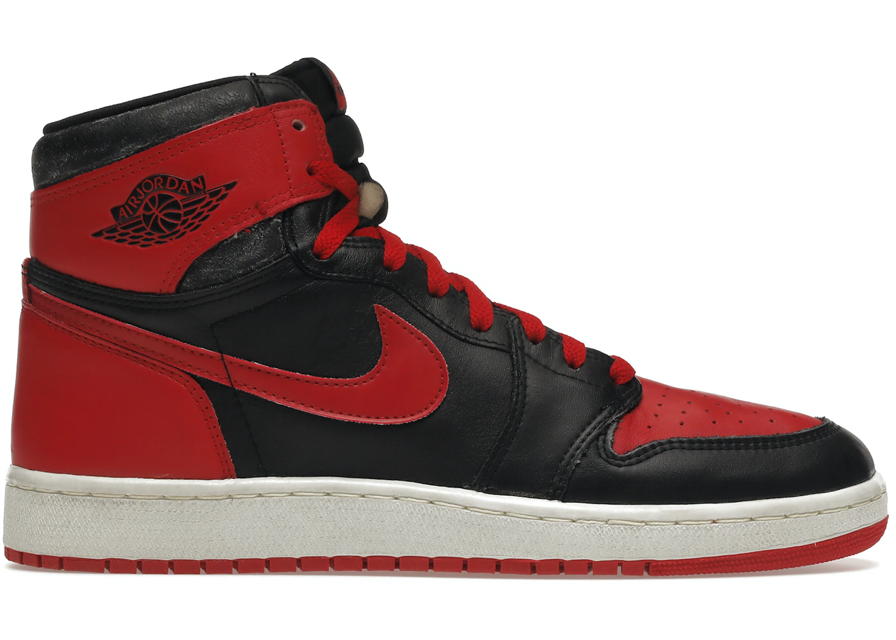
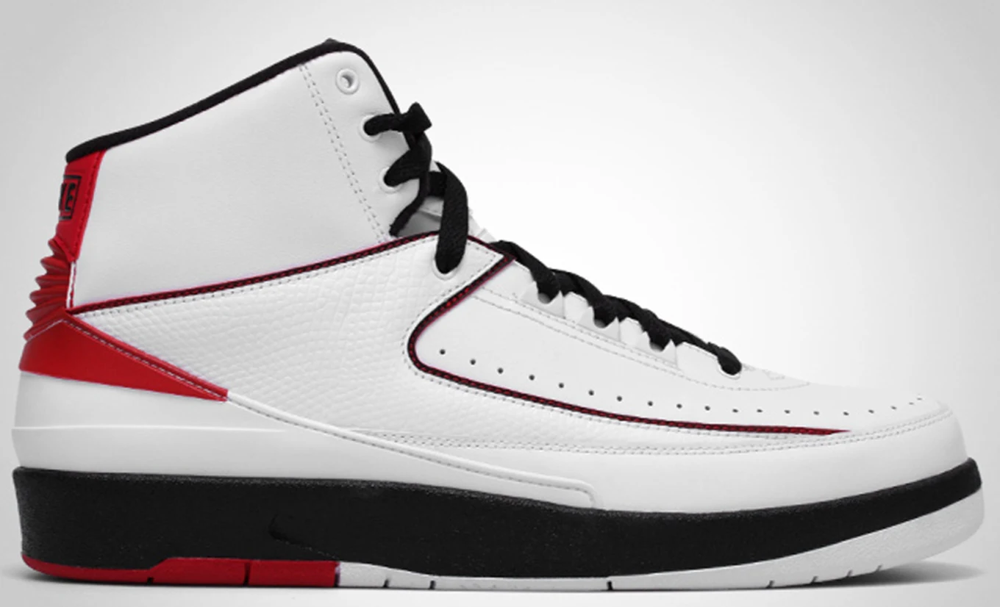
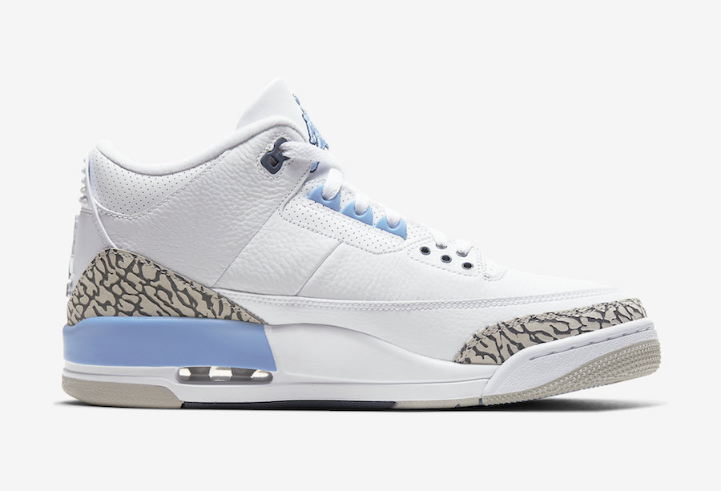
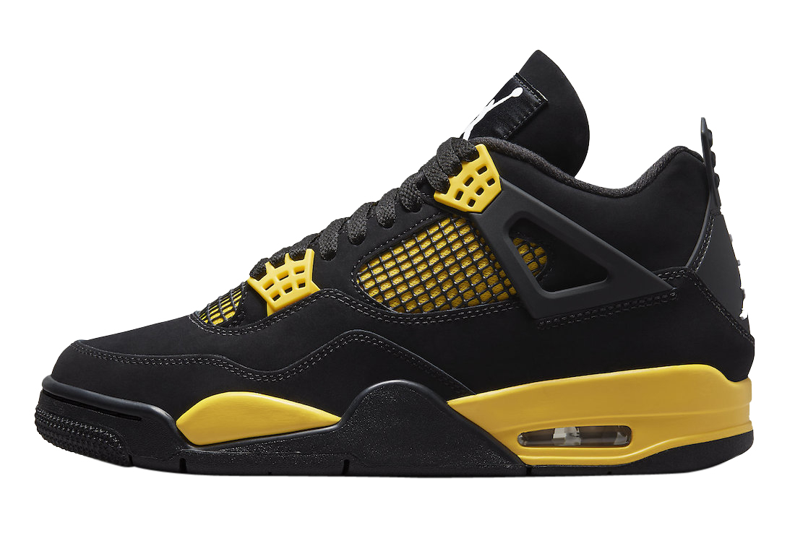

About Jumpman Journals:
Welcome to our Jumpman Journals, where we discuss all things related to Jordan sneakers. If you're a sneakerhead and a fan of Jordan brand, you've come to the right place. Our blog covers topics ranging from the history of Jordan sneakers to release dates of upcoming drops, and we also share our personal favorite Jordans with our readers. We strive to provide you with the latest news and insights about the iconic Jordan sneakers, as well as give you an inside look at the culture surrounding these shoes. Whether you're a die-hard collector or a casual fan, we hope our website will provide you with valuable information and entertainment.
Air Jordan 1: A Classic Sneaker
 Jordan 1 Bred
The Jordan 1 is a basketball shoe designed by Peter Moore and manufactured by Nike, specifically for the legendary basketball player Michael Jordan. It was first released in 1985 and was the first signature shoe for Michael Jordan. At the time, Nike was a relatively new player in the basketball shoe market, and they were looking to make a splash with a new line of shoes designed specifically for Jordan. The Jordan 1 was designed to be both stylish and functional, with a high-top design for ankle support and a unique colorway that set it apart from other basketball shoes of the time.
Where to buy: Jordan 1 Bred "2013" (Goat)
The Air Jordan 2: A Mid Sneaker
 Jordan 2 (Varsity Red/Black)
The Jordan 2 shoe is a basketball shoe that was first released in 1986 by Nike as a part of Michael Jordan's signature line of shoes, the Air Jordan series. The shoe was designed by Bruce Kilgore, who also designed the iconic Air Force 1, and was the first Air Jordan shoe to not be designed by Peter Moore. The design of the Jordan 2 was inspired by luxury Italian shoes, which is reflected in its sleek and sophisticated look. It features a high-top silhouette with a mix of textured leather and faux lizard skin on the upper, as well as a Nike Air cushioning system in the sole for comfort and support.
Where to buy: Jordan 2 Chicago 2023 Retro (Goat)
Air Jordan 3: A Groundbreaking Sneaker
 Jordan 3 UNC
The Jordan 3 is a basketball shoe designed by Tinker Hatfield and manufactured by Nike for the legendary basketball player Michael Jordan. It was first released in 1988, following the success of the Jordan 1 and Jordan 2. It was a groundbreaking shoe for its time, as it introduced several new features and design elements that had not been seen in previous Jordan models. For example, it was the first Jordan shoe to feature the iconic "Jumpman" logo, which has since become synonymous with the Jordan brand. It was also the first Jordan shoe to feature visible Air cushioning, which provided superior comfort and support for basketball players.
Where to buy: Jordan 3 Retro UNC (Goat)
The Air Jordan 4: A Game-Changing Sneaker
 Jordan 4 Thunder (2012)
The Air Jordan 4 (also known as AJ4 or simply J4) is a basketball sneaker designed by Tinker Hatfield and first released in 1989. It was the fourth model in the Air Jordan line and is known for its unique design elements such as the plastic mesh on the upper and the prominent "wings" on the sides. The AJ4 was the first Air Jordan model to be released globally and was worn by Michael Jordan during the 1989 NBA playoffs, where he famously hit "The Shot" over Craig Ehlo of the Cleveland Cavaliers to send the Chicago Bulls to the next round. The shoe has since become a fan favorite and has been released in numerous colorways and collaborations over the years.
Where to buy: Jordan 4 Retro Thunder (Goat)
My Personal Favorite Jordans: